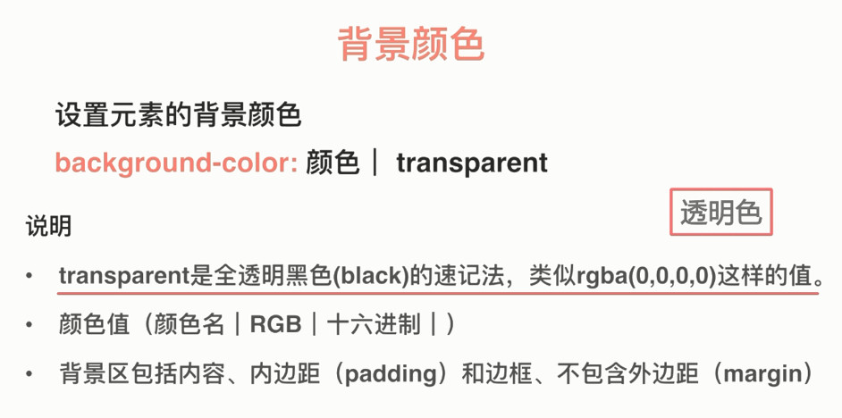

背景和列表
背景
目标：要详细了解样式元素的背景。
背景区包括内容、内边距和边框。
1、background-color（背景颜色属性）
background-color的默认值是transparent。
要经常使用background-color属性：因为设置background-color作应变计划（后备）是很重要的。 background-color在各处都得到了支持，而background-image: linear-gradient();等特性只在较新的浏览器中得到支持，加上background-image可能由于某种原因无法加载。因此，指定background-color属性时也指定这些特性是一个好办法，这样无论如何，元素的内容都是可读的。



背景区包括内容、内边距和边框。下图看起来背景没有应用到边框，实际上是因为边框样式可以覆盖背景，看不到边框样式下的背景而已。


设置边框样式为虚线（dashed）就可以看到被覆盖的背景：
background-color：

background-image同理：

2、background-image（背景图片属性）
background-image的默认值是none。
既设置背景图片又设置背景颜色（为了防止背景图片出问题，还有背景颜色撑下面子），背景图片会覆盖背景颜色。


3、background-repeat（背景重复属性）
background-repeat的前提是必须先有图片。
background-repeat的默认值是repeat。默认情况下，图像在水平和垂直方向上都是重复的，直到填充整个元素的背景。
background-repeat:no-repeat; 图像将不会重复:它只会显示一次。
background-repeat:repeat-x; 图像会在背景中水平地重复。
background-repeat:repeat-y; 图像会在背景中垂直地重复。

水平和垂直（笛卡尔）坐标系

 =>
=> 
大图撑满：

小图重复：

4、background-attachment（背景附着属性）
指定当内容滚动时背景是如何滚动的。
背景图片的附着区域有三类，分别是浏览器的可视区域、背景容器本身区域和背景容器的内容区域。

scroll: 背景图片附着在背景容器上。背景图像相对于元素固定，也就是说当元素内容滚动时背景图像不会跟着滚动，因为背景图像总是要跟着元素本身。但会随元素的祖先元素或窗体一起滚动。也就是说元素的背景在页面滚动时滚动，如果元素内容滚动了，背景并不会滚动。实际上，背景固定在了页面上相同的位置，所以当页面滚动时它才滚动。
fixed: 背景图片附着在浏览器的可视区域。背景图像相对于窗体固定。因此不管当页面还是元素内容滚动时，背景都不会滚动，它会始终保持在屏幕上相同的位置。
local:背景图片附着在背景容器的内容区域。这个值是CSS3添加的(它只在IE9+中得到支持，而其他的属性值则在IE4+中得到支持)，因为scroll值相当混乱，并且在许多情况下并没有真正做您想要的事情。local 值让背景图相对于元素自身内容定位，因此不管当页面还是元素内容滚动时，背景都随内容而滚动。


background-attachment: fixed; 效果图（fixed是相对整个网页的视口来说的）

5、background-position（背景定位属性）
默认值为 0% 0% 即左上角。
该属性可以接受许多不同的值与单位，像px rem这样的绝对单位和相对单位，百分比，还有关键字：left，center， right和 top， bottom。
值得注意的是：1、您可以混合并匹配这些值。比如 background-position: 99% center。以空格分隔属性值。
2、如果您只指定一个值，则该值将被假定为水平值，垂直值将默认为center。


background-postion:x y;
x：{容器(container)的宽度—背景图片的宽度}*x百分比，超出的部分隐藏。
y：{容器(container)的高度—背景图片的高度}*y百分比，超出的部分隐藏。
容器width: 300px;height: 300px;
图片200px*200px
x=(容器的宽度-背景图宽度)*x百分比=(300px-200px)*50%=50px;
y=(容器的高度-背景图高度)*y百分比=（300px-200px）*50%=50px;

6、back-ground（简写属性）

不加no-repeat，后面的内容没有意义。


7、渐变(background-image的属性值）

渐变就是背景中从一种颜色平滑地淡化到另一种颜色的图片（image）。目前有两种类型的渐变——线性渐变(从一条直线到另一条直线)和径向渐变(从一个点发散出来)。在本文中，我们只关注第一种类型，第二种类型比较复杂，也不太常用。
1、linear-gradient()是background-image属性的值。linear-gradient()函数创建线性渐变。函数至少需要用逗号分隔的三个参数——背景中渐变的方向，开始的颜色和结尾的颜色
div {
background-image: linear-gradient(to bottom, orange, yellow);
}
这个渐变将从上到下，从顶部的橙色开始，然后平稳过渡到底部的黄色。可以使用关键字来指定方向 （to bottom，to right， to bottom right等）， 或角度值 (0deg相当于 to top，90deg 相当于 to right，直到 360deg，它再次相当于 to top ）。
2、您也可以沿着渐变线定义渐变的起止颜色断点（color stops）
div {
background-image: linear-gradient(to bottom, yellow, orange 40%, yellow);
}
这个渐变从上往下，从顶部（高度为0%处）到橙色指定位置（高度为40%处）：由黄色向橙色渐变，然后再由该位置（高度为40%处） 到底部（高度为100%处）：由橙色向黄色渐变。您可以指定任意多个起止颜色点，您也可以使用其他的单位来指定这些起止颜色点的位置，例如rem，px等。
3、注意：您还可以使用repeating-linear-gradient()函数来设置一个重复的线性渐变，这是为了设置额外的color stop时省去重复的代码去实现重复渐变。
参考：《CSS3专业网页开发指南》
举个栗子：
CSS：
p {
font-family: sans-serif;
padding: 20px;
/* background properties */
background-color: yellow;
background-image: linear-gradient(to bottom, yellow, #dddd00 50%, orange);
}
效果图：

8、多个背景图片（图像与图像的叠加）
IE9+支持
以前有多个背景图片时，web开发人员必须在他们的框中放置多个<div>元素，然后对每个元素应用单独的背景图像：
<div class="background1">
<div class="background2">
<div class="background3">
<p>My content</p>
</div>
</div>
</div>
这是有效的，但是它导致了非常混乱的难以阅读的标记。如果需要支持旧版本的Internet Explorer，您可能仍然需要这样做。
从IE9开始，多个背景图片才能应用到单个元素。
这些背景像箱子一样垂直地重叠在一起，第一层成为最顶层，第二个在下面，第三个，等等。在下面的示例代码中，image.png在background-tile.png之上。
div {
background: url(image.png) no-repeat 99% center,
url(background-tile.png),
linear-gradient(to bottom, yellow, #dddd00 50%, orange);
background-color: yellow;
}
也可以将多个值放入到普通写法的 background-*属性中（除了background-color），同样遵循代码前后顺序应用到对应的图片，比如下面的示例代码中，no-repeat应用到image.png，repeat应用到background-tile.png：
background-image: url(image.png), url(background-tile.png);
background-repeat: no-repeat, repeat;
举个栗子：
CSS:
p {
font-family: sans-serif;
padding: 20px;
/* background properties */
background-color: yellow;
background: url(https://mdn.mozillademos.org/files/13026/fire-ball-icon.png) no-repeat 99% center,
linear-gradient(to bottom, yellow, #dddd00 50%, orange);
}
效果图：

9、背景尺寸（background-size属性）
background-size属性允许改变背景图像的大小。这在很多方面都很有用，例如在之前样式化链接中纠正没有正确上传的图标的大小。
background-size属性包含两个背景大小值，一个用于水平方向，另一个用于垂直方向。可以使用所有长度单位来指定想要的值——px，百分比， rem等。
background-image: url(myimage.png);
background-size: 16px 16px;
列表
任务目标：熟悉与列表相关的样式和最佳做法
1、list-style-type（列表项标记类型）
列表项前面通常有一个标记，如一个圆点或数字，这个标记实际上不属于列表项内容区的一部分。
ol {
list-style-type: upper-roman;
}

关键字：

2、list-style-image（列表项标记图片）
ul {
list-style-image: url(star.svg);
}


3、list-style-position（列表项位置）

list-style-position: outside; 效果图（文本不环绕图标，项目符号位于列表项之外）

list-style-position: inside; 效果图（图标向右移，文本环绕图标，项目符号位于列表项之内）

list-style简写属性

注意：list-style-image会覆盖list-style-type的设置
控制有序列表计数
有时可能想在有序列表上进行不同的计数方式。例如： 从1以外的数字开始，或向后倒数，HTML和CSS有一些工具可以帮助您。
start属性
start 属性允许从1 以外的数字开始计数。
HTML：
<ol start="4">
<li>Toast pitta, leave to cool, then slice down the edge.</li>
<li>Fry the halloumi in a shallow, non-stick pan, until browned on both sides.</li>
<li>Wash and chop the salad.</li>
<li>Fill pitta with salad, humous, and fried halloumi.</li>
</ol>
效果图：

reversed属性
reversed 属性启动列表倒计数。
HTML：
<ol start="4" reversed>
<li>Toast pitta, leave to cool, then slice down the edge.</li>
<li>Fry the halloumi in a shallow, non-stick pan, until browned on both sides.</li>
<li>Wash and chop the salad.</li>
<li>Fill pitta with salad, humous, and fried halloumi.</li>
</ol>
效果图：

注意：如果reversed列表中的列表项多于start属性的值，则计数将继续为零，然后为负值。
value属性
value 属性允许指定列表项数值。
HTML：
<ol>
<li value="2">Toast pitta, leave to cool, then slice down the edge.</li>
<li value="4">Fry the halloumi in a shallow, non-stick pan, until browned on both sides.</li>
<li value="6">Wash and chop the salad.</li>
<li value="8">Fill pitta with salad, humous, and fried halloumi.</li>
</ol>
效果图：

注意: 即使使用非数字的 list-style-type, 你仍需要使用与数值同等意义的值作为 value 的属性。
处理列表间距
浏览器默认字体大小为16px时，
<ul>和<ol>都是默认上下margin16px（1em） ，左边的区域：padding-left为40px(2.5em)。下面以ul（无序列表）为例。


<li>默认是没有间距的

列表整体效果图：

<dl>默认上下margin都是16px（1em），没有内边距

<dd> 默认margin-left是40px (2.5em)

<p>默认上下margin都是16px（1em）

样式化列表时，你需要调整列表的样式，使列表与周围的元素保持相同的垂直间距。
首先
1、不同的列表和段落设置相同的相对字体大小（这些列表的子元素将会继承该规则集的字体大小）
html {
font-family: Helvetica, Arial, sans-serif;
font-size: 10px;
}
h2 {
font-size: 2rem;
}
ul,ol,dl,p {
font-size: 1.5rem;
}
2、段落和列表项、术语和术语描述都设置相同的 line-height ，因此段落和每个单独的列表项、术语、术语描述 行与行之间具有相同的间距
p, li {
line-height: 1.5;
}
dt, dd {
line-height: 1.5;
}
使用自定义的项目符号图片
list-style-image这个属性在控制项目符号的位置，大小等方面是有限的，最好使用一系列的 background 属性 实现项目符号使用自定义图片。
ul {
padding-left: 2rem;
list-style-type: none;
}
ul li {
padding-left: 2rem;
background-image: url(star.svg);
background-position: 0 0;
background-size: 1.6rem 1.6rem;
background-repeat: no-repeat;
}
<ul>设置内边距，然后将 list-style-type 设置为none，这样就不会显示项目符号，因为我们将使用 background 属性来代替项目符号。

列表项设置与<ul>相同的内边距，如果列表项<li>没有设置内边距，背景图像将与列表项文本重叠，这看起来会很乱。所以列表项设置内边距是为了腾出空间给背景图像。

background-position: 0 0; 这意味着项目符号将出现在每个列表项的最左上侧。
background-size: 1.6rem 1.6rem;理想条件下，我们想要项目符号与列表项的大小相同，background-size设置为1.6rem（16px），它非常吻合我们为项目符号设置的 20px 的内边距， 16px 加上 4px 的空格间距效果更好。
background-repeat：no-repeat; 默认条件下，背景图片不断复制直到填满整个背景空间，背景图片只需复制一次，所以设置值为 no-repeat。
效果图：